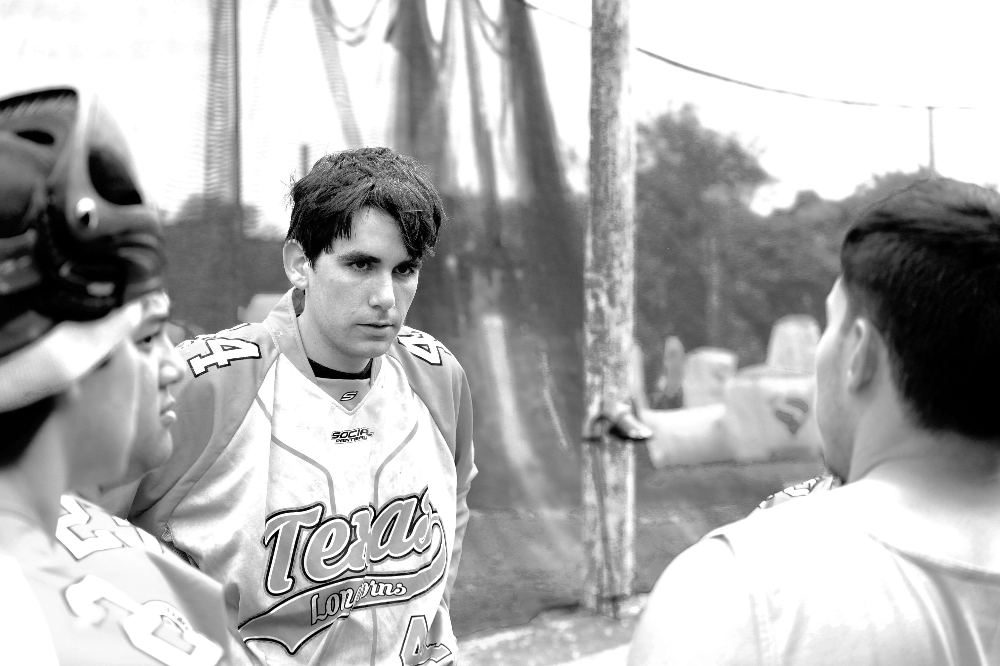
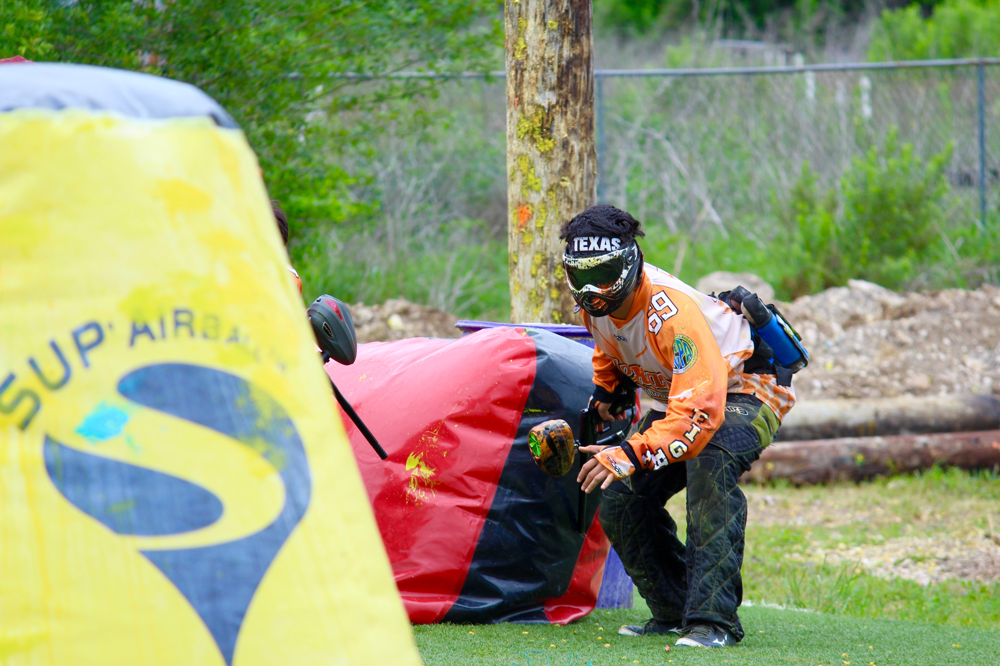
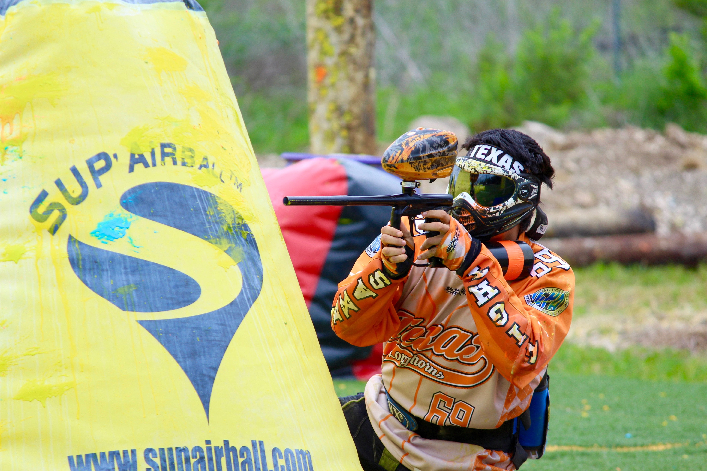
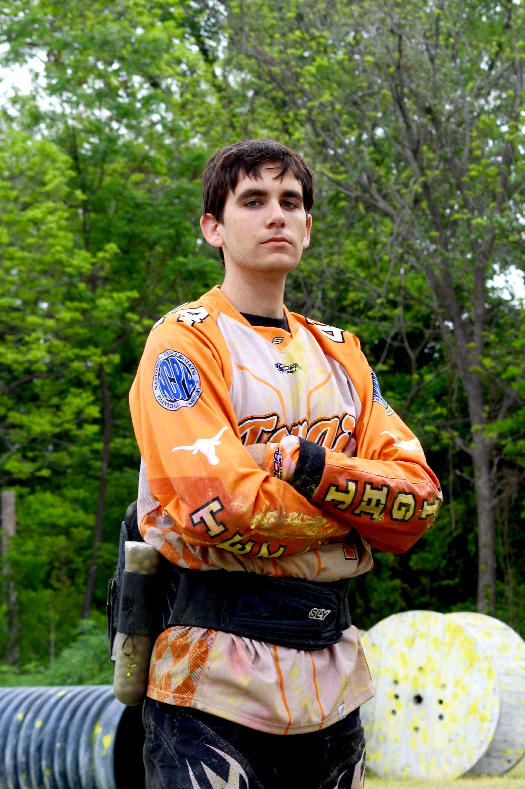

UT Paintball
Better Safe Than Sorry
By Hannah Rose
May 10, 2016
There are over 1,000 student organizations to join at The University of Texas at Austin. Among those that are athletic, paintball is one of the most extreme– but also one of the safest.
The following table shows U.S. sports injuries in 2002, ranked by exposure incidence:
| Sport | Athlete Exposures | Injuries | Exposures |
|---|---|---|---|
| Boxing | 22,164 | 116 | 5.2 |
| Football (tackle) | 285,764 | 1,084 | 3.8 |
| Snowboarding | 57,697 | 218 | 3.8 |
| Ice Hockey | 112,802 | 415 | 3.7 |
| Skiing (Downhill) | 95,849 | 289 | 3.0 |
| Soccer | 682,649 | 1,634 | 2.4 |
| Softball | 472,936 | 1,063 | 2.2 |
| Basketball | 1,460,319 | 2,783 | 1.9 |
| Football (Touch) | 349,210 | 661 | 1.9 |
| Surfing | 56,432 | 99 | 1.8 |
| Cheerleading | 193,206 | 323 | 1.7 |
| Water Skiing | 61,715 | 100 | 1.6 |
| Racquetball | 102,266 | 154 | 1.5 |
| Martial Arts | 409,259 | 610 | 1.5 |
| Wrestling | 92,747 | 133 | 1.4 |
| Baseball | 443,297 | 602 | 1.4 |
| Volleyball | 504,022 | 667 | 1.3 |
| Mountain Biking | 169,734 | 201 | 1.2 |
| Tennis | 368,663 | 415 | 1.1 |
| Ice Skating | 96,694 | 105 | 1.1 |
| Horseback Riding | 279,091 | 265 | 1.0 |
| Skateboarding | 471,739 | 399 | 0.8 |
| Hunting | 252,032 | 207 | 0.8 |
| Bicycling (BMX) | 236,931 | 188 | 0.8 |
| Running/Jogging | 2,629,692 | 1,654 | 0.6 |
Paintball is often listed in the category of extreme sports, with activities like bouldering, mountaineering, wakeboarding, and water skiing. Though paintball is categorized this way, it does not pose the same risks that other extreme sports do. Paintball carries the stigma of being violent and dangerous. At UT, the paintball team seeks to reverse that stigma, promoting a sense of camaraderie and overall safety.
Paintball President Jack Sullivan talks to his teammates after practice.
“I think the stigma comes from people who have played one time in the woods at a birthday party,” Jack Sullivan said. Sullivan is president of the UT team and a junior studying Aerospace Engineering. He has played paintball since he was 14, when he went to a few paintball-themed birthday parties with his two best friends. The trio enjoyed the sport so much that they started going regularly.
According to Sullivan, the history of the game started in the woods, but today it is mostly played on turf in a fenced off environment full of inflatable bunkers. Now, playing paintball in the woods is recreational and rarely done.
“They keep that image of just a bunch of people playing soldiers in the woods,” Sullivan said. “But that’s the farthest thing from what we actually do.”
Playing paintball in the woods evokes a sense of wildness, where the turf is unchartered and safety measures are not as strict. The use of paintball guns does not help the game’s reputation. However, when treated with proper safety measures, the game and the guns are very safe.
Long-sleeved shirts, pants, gloves, and close-toed shoes are required to play the game. Most importantly, everyone on the field must have a mask to protect their eyes. Paintball masks protect from shots fired 320-330 feet per second, and most paintball guns shoot at 280-300 feet per second. Any gun shooting at a faster rate is not field legal.
Injuries in paintball are very rare.
“The worst thing you’ll ever see is maybe a twisted ankle,” Sullivan said.
Out of all extreme sports, paintball is statistically the least dangerous. According to American Sports Data Inc., injuries occur at a rate of 0.2 per 1,000 exposures, equating to once every 500 years for the average paintball player.
However, the game’s bad reputation has persisted despite safety measures. Even at UT, a university with an even spread of conservative and liberal students, the idea of playing with guns seems too extreme.
“Fundraising with our T-shirt sales was hard,” Christian Smith said. “We had a lot of people who didn’t want to buy them because the shirts had the Texan ‘Come and Take It’ logo on the back with a paintball gun.”
Christian Smith crouches down in defense at the beginning of a practice match against University of North Texas.
Smith is a sophomore on the team who serves as the merchandise officer. He started playing paintball with his friends in high school and decided to join the UT team after seeing their tabling efforts outside of Gregory Gym.
“It is very competitive, but each player understands the safety risks of the sport,” Smith said. “There are strict measures to make sure nobody gets seriously hurt.”
Smith defends paintball as something exciting but also rewarding because of the connections students make.
“We’re all very close,” Smith said. “We have a lot of social events together as a team and as friends. We just celebrated Jack’s birthday last week.”
Smith takes aim at the opposing UNT players.
Ray Corson, a senior and the only female team member, also attests to the close bond within the UT group. Corson joined UT Paintball in the spring of 2014 when her dad suggested she join a club. Uninterested in joining a sorority, Corson found the paintball team on the university’s list of student organizations. Since joining the team, she can attest to its inclusiveness and family values.
“You know how people in Greek life find their sisters?” Corson asked. “It’s like that… Except I have all brothers.”
Corson often drives when the team travels for tournaments. She explained the team’s rule that whoever sits in the passenger seat has to be awake and keep the driver company.
“Jack sat next to me and we talked for three hours,” Corson said. “It definitely made me appreciate him more as our president. He’s a really great leader. He’s good at organizing and keeping us on track.”
Aside from camaraderie, Corson finds a release in playing the game.
“It’s stress relieving for sure,” Corson said. “It’s super competitive. If you have any sort of competitive nature, you’ll get addicted.”

Ray Corson, the only female player on the team, poses with her paintball gun.
Corson also validates paintball as an accessible sport. All levels of athleticism and experience are welcome. Smith agrees that people of any shape or size can play.
“You don’t have to be the most athletic person if you play the field smartly and if you’re a good shot,” Smith said. “But you don’t have to be able to hit a dime from 1000 yards if you’re able to create opportunities in other ways by getting good positions on your opponents.”
The team practices twice a week at an off-campus location in Pflugerville called Outlaw Paintball. There are four different strings, or squads, ranked from the most experienced: UT Orange, UT White, UT Black, and UT Blue. All four squads of the team practice together, running drills and plays to prepare for matches and tournaments against other teams.
UT Paintball travels to tournaments around the country six times a year, including the College Paintball National Championships. They walked away placing fifth in the tournament and second overall among the country’s top ranked teams for the year, just five years after their start as a team.
The team has applied four times for sponsorship under UT’s Recreational Sports Club Division. If a sports team is accepted for sponsorship, they are provided with a practice space, a financial advisor, and funding. They are also granted permission to use university logos.
The associate director of sports clubs, Randall Ford, claimed that there is no funding or facility space for the team as of now.
“Their timing has been unfortunate,” Ford said.
Sullivan stated that the paintball team has never submitted a budget in one of their four applications. The golf club was recently accepted for club sponsorship this semester and granted a small budget with their new status.
“I would say previous areas in need of improvement were in club leadership and an appropriate level of resources to successfully advise the club,” Ford said.
While he claimed that “paintball is non-traditional,” Ford said that the conversation to become a sponsored club is still on the table.
Despite their attempts to become recognized by the university, the team successfully finances their equipment and travel costs through annual dues and fundraising efforts. Dues cost 375 dollars per semester for members who compete in tournaments, and 325 dollars for those who do not. This is considerably low when the average paintball game costs 60 dollars.
The team will also provide gear for new members until they decide to buy their own equipment, which most players do. Buying their own paintball gun means upgrading to one with better accuracy and precision.
The team makes great efforts to recruit students every semester, tabling seven hours a day outside of Gregory Gym for the first two weeks of every semester. They also advertise via flyers and social media. When advertising to students, they make efforts to clarify the safety of the game to let students know what they are signing up for.
“It’s actually a super safe sport,” Sullivan said. “We make it clear at our informational meetings to new recruits that we pretty much never play in the woods and we play on a turf field with inflatable bunkers.”
Sullivan stands cross-armed after the team’s last practice before nationals.
The team’s efforts to recruit and fundraise reflect their passion for the sport. Even though the university is unable to sponsor them, the students work together to continue doing something they all love and stand behind, despite its negative reputation.
“People that have a negative perception of the sport simply are not aware of what the sport truly is, and just group it in with guns and gun violence,” Smith said. “It really is a fun sport, both at the competitive and casual level. I’d encourage everyone to try it at least once in their lives!”
Having played paintball for seven years, Sullivan defends the sport as an experience unlike any other.
“I think why someone would join this club is the adrenaline rush you get while playing,” Sullivan said. “It’s totally unique to this game. As soon as the buzzer starts, it’s just you and your 4 teammates against the other team and nothing else in the world can help you win that game. It’s all about working as a team.”
While Sullivan spoke about the adrenaline rush, his words also apply to the friendships on the team.
“I think when someone plays and gets that feeling,” Sullivan said, “They’re hooked and they want to come back.”